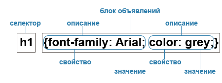

CSS (Cascading Style Sheets) — що в перекладі означає каскадні
таблиці стилів. Це
спеціальна мова (мова
стилів), за допомогою якої описують вигляду документів (як і де відображати елементи веб-сторінки), написаних
мовами розмітки даних. Найчастіше CSS використовується для документів, котрі розмічені мовою HTML, XHTML та XML.

Види таблиць стилів:
- Зовнішня таблиця стилів є текстовим файлом з розширенням .css, в
якому знаходиться набір
CSS-стилів
елементів.
Файл створюється в редакторі коду, як і HTML-сторінка. Усередині файлу можуть бути лише стилі, без
HTML-розмітки. Зовнішня таблиця стилів підключається до веб-сторінки за допомогою елемента
<link>>, розташованого всередині розділу
<head></head>
. Такі стилі працюють на всіх сторінках сайту.
- Внутрішні стилі вбудовуються в розділ
<head></head>
HTML-документа та визначаються всередині елемента
<style></style>.
Внутрішні стилі мають
пріоритет
над зовнішніми, але поступаються вбудованим стилям (заданим через атрибут style).
- Коли ми пишемо вбудовані стилі, ми пишемо CSS-код у HTML-файлі,
безпосередньо всередині
елемента за
допомогою
атрибуту style